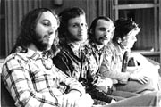

|
Алексей "Уайт" Белов
|
Празднование юбилея первых исполнителей блюз-рока в СССР превратится в фестиваль блюз-роковой музыки, блюза и рок-н-ролла в концертном зале клуба "Ю-ТУ" (кинотеатр "Балтика", метро "Сходненская"). 12 мая, пятница, начало концерта в 19.00.
Перед началом концерта состоится пресс-конференция, в которой, кроме именинников, будет участвовать цвет нашей блюзовой и рокнролльной сцены, ее основатели, первопроходцы и ветераны. Это уникальный шанс убедиться, сколь глубокие корни имеет исполнение блюза и рок-н-ролла на отечественной музыкальной сцене.
В концерте примут участие:
С группой "Удачное приобретение" играет молодой виртуоз губной гармоники Михаил Владимиров-младший. Концерт завершит супер-джем с участием многих замечательных блюзмэнов и рок-музыкантов.
Стоимость билета - 50 рублейПосле концерта состоится фуршет для
прессы и участников.
По вопросам аккредитации обращаться по
телефону: 412 31 60, непосредственно к
Алексею Белову-старшему.
 "Talk
With You" в исполнении группы "Удачное
приобретение", 1974г. (как и блюз Р.Джонсона
"Ramblin' On My Mind" в исполнении "Трех
Беловых" и Михаила Владимирова), звучит в
альбоме "Весь Этот Наш Блюз".
Дополнительную информацию об этой записи и
обо всем альбоме вы найдете здесь.
"Talk
With You" в исполнении группы "Удачное
приобретение", 1974г. (как и блюз Р.Джонсона
"Ramblin' On My Mind" в исполнении "Трех
Беловых" и Михаила Владимирова), звучит в
альбоме "Весь Этот Наш Блюз".
Дополнительную информацию об этой записи и
обо всем альбоме вы найдете здесь.
На фестивале можно будет приобрести этот альбом по цене 90 рублей.